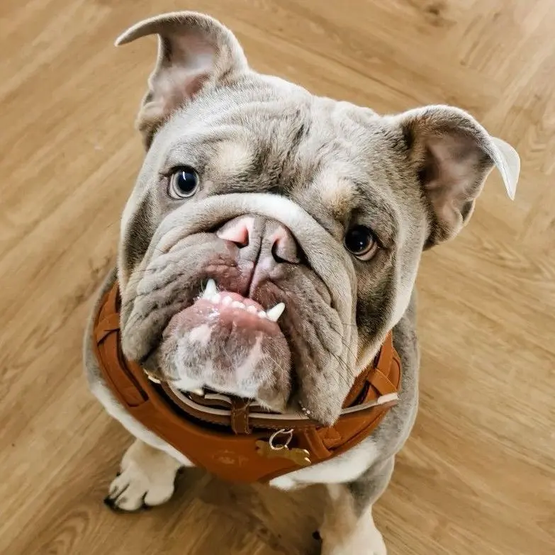

სურათი
ისტორია
ბულდოგი ინგლისიდანაა, თავდაპირველად გამოიყენებოდა სპორტში. დღეს პოპულარული შინაური ძაღლი მშვიდი ხასიათის გამო.
ზომა და გარეგნობა
ზომა: 31–40 სმ
წონა: 18–23 კგ
ფერები: ფორთოხლისფერი, თეთრი, შავი, ბი-კოლორი
ხასიათი
მეგობრული, მშვიდი, ერთგული, იდეალურია ოჯახისთვის.